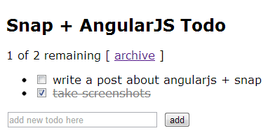
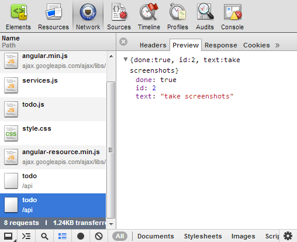

AngularJS with Haskell
Introduction
I recently wrote a simple To-Do app in AngularJS using the Haskell web development framework called Snap. I started with the To-Do example I found on the AngularJS’s homepage and added the necessary JavaScript plumbing to enable talking to a Haskell web server over a REST API. I figured someone might find my little app a useful starting point for developing web applications with AngularJS and Snap, and so I decided to upload the code on github and write this code walkthrough.
To get started, you can try to build & run the app:
git clone git://github.com/nurpax/snap-examples
cd snap-examples/angularjs-todo
cabal-dev install
./cabal-dev/bin/angularjs-todo
# browse to http://localhost:8000You should see something like this:

I will not go into much detail about AngularJS usage here – you should read more about it on their homepage. This post will focus on what’s needed in order to build an AngularJS app with a Haskell backend.
In an AngularJS app, a major part of the application is JavaScript and runs in the the browser. These applications are usually backed by a central server. In our case, the backend is written in Haskell. This server takes care of user management, authentication and persistence. The frontend talks to the backend via a REST API. The REST API communicates things like adding or listing to-do items.
Frontend JavaScript parts
The main client-side source files are:
- static/index.html - Application frontpage
- static/todo.js - Controller for to-do items
- static/services.js - Model definition
The “AngularJS application” is defined static/index.html. It contains definitions on how to display the main page, how to list to-do items and how to hook up UI events to controller actions.
The application calls into a TodoCtrl controller defined in static/todo.js. The controller mostly deals with UI events. The controller talks to the backend via a Todo service.
The Todo service is defined static/services.js. It defines the client-server interface for accessing user’s to-do items, providing methods such as Todo.query() and Todo.save().
The Haskell backend
The most interesting server parts can be found in the following source files:
- src/Site.hs - Main server module (login, authentication, REST)
- src/Db.hs - Model definition (types, JSON serialization, database persistence)
The model definition of our to-do app is quite simple. The main type is the Todo item:
data Todo =
Todo
{ todoId :: Maybe Int64 -- database row id
, todoText :: T.Text -- todo text
, todoDone :: Bool -- completed?
} deriving (Show)The Db module defines how these objects can be serialized to/from JSON using the aeson package:
instance FromJSON Todo where
parseJSON (Object v) =
Todo <$> optional (v .: "id")
<*> v .: "text"
<*> v .: "done"
parseJSON _ = mzero
instance ToJSON Todo where
toJSON (Todo i text done) =
object [ "id" .= fromJust i
, "text" .= text
, "done" .= done
]The rest of the module is about persisting Todos in an SQLite database.
The final piece of the puzzle is the Site module which plugs all of the above server bits together. It manages routing, authentication and serves to-do items over a REST API. The server-side routing is defined as follows:
-- | Render main page
mainPage :: H ()
mainPage = withLoggedInUser (const $ serveDirectory "static")
-- | The application's routes.
routes :: [(ByteString, Handler App App ())]
routes = [ ("/login", with auth handleLoginSubmit)
, ("/logout", with auth handleLogout)
, ("/new_user", with auth handleNewUser)
, ("/api/todo", with auth handleTodos)
, ("/", with auth mainPage)
, ("/static", serveDirectory "static")
]There’s a couple of things to note about the above routing table:
- The REST interface is at
/api/todoand gets handled byhandleTodos - Serving the main page is just a matter of serving static files. This is because all the important templating happens on client-side in static/index.html.
The actual implementation of the /api/todo handler is straightforward (esp. with the hidden gem that is snap-extras):
handleTodos :: H ()
handleTodos =
method GET (withLoggedInUser getTodos) <|>
method POST (withLoggedInUser saveTodo)
where
getTodos user = do
todos <- withDb $ \conn -> Db.listTodos conn user
writeJSON todos
saveTodo user = do
newTodo <- getJSON
either (const $ return ()) persist newTodo
where
persist todo = do
savedTodo <- withDb $ \conn -> Db.saveTodo conn user todo
writeJSON savedTodoFunction handleTodos handles either GET or POST requests, for retrieving and modifying todo items. All its request parameters come in as JSON – these are turned into Haskell objects using getJSON from Snap.Extras.JSON. Similarly, we use writeJSON for outputting the request response. Automatic JSON encode and decode is made possible by the FromJSON and ToJSON instances defined in the Db module.
Debugging JSON responses
A good way to debug your REST APIs is to use Chrome’s Developer Tools. Open the Developer console and click on the Network tab. When you load a page, you can see what requests are being made and you can inspect what JSON gets sent by clicking on the individual /api/todo requests. Here’s an example of what traffic gets generated when complete a to-do:

This is the result of a todo.$save() AJAX call.
What next?
Well.. The easy part is over. If you want to learn more about using AngularJS with Snap, I suggest that you:
- Read the AngularJS docs
- Read the Snap Framework docs
- Read the example source
- Compile, run and play with the example
HTH.